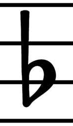

| [ << Introducción ] | [Arriba][Índice general][Índice][ ? ] | [ Tutorial >> ] | ||
| [ < Introducción ] | [ Subir : Introducción ] | [ Grabado > ] | ||
1.1 Antecedentes
Esta sección se ocupa de las metas principales y la arquitectura de LilyPond.
| Grabado | ||
| Grabado automático | ||
| ¿Qué símbolos grabar? | ||
| Representación musical | ||
| Aplicaciones de ejemplo |
| [ << Introducción ] | [Arriba][Índice general][Índice][ ? ] | [ Tutorial >> ] | ||
| [ < Antecedentes ] | [ Subir : Antecedentes ] | [ Grabado automático > ] | ||
Grabado
El arte de la tipografía musical se conoce como grabado (en plancha). El término deriva del proceso tradicional de la impresión musical. Hace sólo unas décadas, la música impresa se hacía estampando la música sobre planchas de zinc o estaño de forma invertida como en un espejo. Después la plancha se entintaba y las depresiones causadas por los cortes y estampados retenían la tinta. Al presionar una hoja de papel sobre la plancha, se formaba una imagen. El estampado y cortado se hacía completamente a mano. Cualquier corrección era muy fastidiosa de realizar, si es que era posible hacerla siquiera, así que el grabado tenía que quedar perfecto a la primera. El grabado era una habilidad altamente especializada; un artesano necesitaba unos cinco años de preparación antes de poder ostentar el título de maestro grabador, y se necesitaban otros cinco años de experiencia para ser un auténtico experto.
Hoy en día, toda la música impresa nueva se produce con ordenadores. Esto tiene unas ventajas evidentes: las copias son más baratas de producir y el trabajo editorial se puede repartir por correo electrónico. Desgraciadamente la penetrante utilización de ordenadores también ha hecho disminuir la calidad gráfica de las partituras. Las impresiones de ordenador tienen un aspecto insulso y mecánico, lo que hace que sea desagradable tocar a partir de ellas.
Las imágenes siguientes ilustran la diferencia entre el grabado tradicional y la salida típica de ordenador, y la tercera imagen muestra cómo LilyPond imita el aspecto tradicional. La imagen de la izquierda presenta el dibujo escaneado de un símbolo de bemol sacado de una edición publicada en el año 2000. La del centro es un símbolo procedente de una edición de Bärenreiter grabada a mano de la misma música. La de la izquierda ilustra los típicos puntos débiles de la impresión por ordenador: las líneas del pentagrama son muy delgadas, el peso del símbolo del bemol es también demasiado ligero como las líneas del pentagrama, y tiene una apariencia rectilínea con esquinas afiladas. En contraste, el bemol de Bärenreiter tiene una apariencia redonda, pesada, casi voluptuosa. Nuestro símbolo del bemol se diseñó según éste, entre otros. Es de forma redondeada y su peso está en armonía con el grosor de nuestras líneas de pentagrama, que son asimismo mucho más gruesas que las de la edición por ordenador.
 |  |  | |
Henle (2000) | Bärenreiter (1950) | Tipografía Feta de LilyPond (2003) |
Tratándose del espaciado, la distribución del espacio debe reflejar las duraciones que hay entre las notas. Sin embargo muchas partituras modernas se atañen a las duraciones con precisión matemática, lo que lleva a unos resultados bastante pobres. En el siguiente ejemplo se muestra un ejemplo dos veces: una utilizando espaciado matemáticamente exacto, y otra con ciertas correcciones. ¿Puede adivinar cuál es cuál?
![[image of music]](../90/lily-35e012eb.png)
Cada uno de los dos compases de este fragmento tiene solamente notas de duración constante. El espaciado debería reflejarlo. Desgraciadamente el ojo nos engaña un poco; no solamente percibe la distancia entre las cabezas de las notas, sino que tiene también en cuenta la distancia entre las plicas. Como resultado, las notas de una combinación plica arriba/plica abajo se tendrían que separar más, y las notas de una combinación plica abajo/plica arriba deberían juntarse, todo ello dependiendo de las posiciones combinadas de las notas. Los dos compases de arriba están impresos con esta corrección y los de abajo sin ella, formando grupos de notas pegadas con plica abajo/plica arriba.
Los músicos están normalmente más concentrados en tocar que en estudiar el aspecto de una partitura, y por ello las pequeñeces sobre los detalles tipográficos pueden parecer académicas. Pero no lo son. En las partituras más largas con ritmos monótonos, las correcciones de espaciado llevan a sutiles variaciones en la disposición de cada una de las líneas dándoles una especie de firma visual distintiva. Sin esta firma, todas las líneas parecerían iguales, y se convertirían en un laberinto. Si un músico aparta la mirada o tiene un lapsus de concentración, las líneas podrían perder su lugar sobre el papel.
De forma similar, la fuerza visual de unos símbolos pesados sobre gruesas líneas de pentagrama se sostiene mejor cuando el lector se aleja del papel, por ejemplo cuando está sobre un atril. Una distribución cuidadosa del espacio blanco permite disponer la música muy apretada sin que los símbolos se toquen unos a otros. El resultado reduce a un mínimo las vueltas de página, lo que es una gran ventaja.
Ésta es una característica normal del arte tipográfico. La disposición de la página tiene que ser bonita, no sólo por sí misma, sino sobre todo porque así ayuda al lector en su tarea. Para los materiales destinados a la interpretación, como las partituras, esto es de una importancia doble: los músicos tienen una capacidad de concentración limitada. Cuanta menos atención necesiten para el acto de leer, más se pueden dedicar al acto de tocar la música. Dicho de otra forma: una mejor tipografía se traduce en una mejor interpretación.
Estos ejemplos demuestran que la tipografía musical es un arte sutil y complejo, y que su elaboración requiere una experiencia considerable, que los músicos no suelen tener. LilyPond representa nuestro esfuerzo para llevar la excelencia visual de la música grabada a mano a la era de la informática, y ponerla a disposición de los músicos normales. Hemos ido afinando nuestros algoritmos, diseños de tipografía y preferencias del programa para producir una impresión cuya calidad se equipara con la de las viejas ediciones que tanto nos gusta contemplar y de las que tanto nos gusta tocar.
| [ << Introducción ] | [Arriba][Índice general][Índice][ ? ] | [ Tutorial >> ] | ||
| [ < Grabado ] | [ Subir : Antecedentes ] | [ ¿Qué símbolos grabar? > ] | ||
Grabado automático
¿Cómo nos las arreglamos para implementar la tipografía? Si un artesano necesita más de diez años para convertirse en un auténtico maestro ¿cómo vamos a poder nosotros, simples «hackers», escribir un programa que les quite el trabajo?
La respuesta es: no podemos. Puesto que la tipografía se fundamenta en el juicio humano sobre la apariencia, nunca se puede sustituir completamente a las personas. Sin embargo, se puede automatizar gran parte del trabajo más duro y repetitivo. Si LilyPond resuelve la mayoría de las situaciones comunes de forma correcta, esto ya será una tremenda mejoría sobre los programas existentes. El resto de los casos se podrán afinar a mano. Con el transcurso de los años, el software se puede refinar para que haga un mayor número de cosas de forma automática, de tal forma que los ajustes manuales tienden a ser cada vez menos necesarios.
Cuando empezamos, escribimos el programa LilyPond completamente en el lenguaje C++; la funcionalidad del programa quedaba como esculpida en piedra por los desarrolladores. Este esquema resultó no ser muy satisfactorio por una serie de motivos:
- Cuando LilyPond comete fallos, los usuarios tienen la necesidad de superar las decisiones de formateo. Por ello el usuario debe tener acceso al motor de formateo. De aquí que no podamos dejar establecidas las reglas y valores durante la compilación, sino que los usuarios deben poder acceder a ellos durante la ejecución del programa.
- El grabado de música es cosa de juicio visual y por ello es cuestión de gustos. A pesar de saber tanto como creemos saber, los usuarios pueden no estar de acuerdo con nuestras decisiones personales. Por tanto la definición del estilo tipográfico también debe estar al alcance del usuario.
- Por último, estamos continuamente refinando los algoritmos de formateo y por tanto necesitamos un enfoque flexible para las reglas. El lenguaje C++ fuerza un cierto método para agrupar las reglas que no encaja bien con la manera de funcionar de la notación musical.
Estos problemas se han solucionado integrando un intérprete del lenguaje Scheme y reescribiendo parte del código de LilyPond en Scheme. La actual arquitectura de formateo se construye alrededor del concepto de objetos gráficos, descrita por variables y funciones de Scheme. Esta arquitectura puede tratar al mismo tiempo con las reglas de formateo, el estilo tipográfico y las decisiones de formateo individuales. El usuario tiene acceso directo a la mayor parte de estos controles.
Las variables de Scheme controlan las decisiones de formateo. Por ejemplo, muchos objetos gráficos tienen una variable de dirección que codifica la elección entre arriba y abajo (o izquierda y derecha). Aquí puede ver dos acordes con acentos y signos de arpegio. En el primer acorde los objetos gráficos tienen todas sus direcciones hacia abajo (o hacia la izquierda). El segundo acorde tiene todas las direcciones hacia arriba (o hacia la derecha).
![[image of music]](../ad/lily-a808e181.png)
El proceso de formatear una partitura consiste en leer y escribir las variables de los objetos gráficos. Ciertas variables tienen un valor predefinido. Por ejemplo, el grosor de muchas líneas (una característica del estilo tipográfico) son variables con un valor preestablecido. Podemos alterar este valor libremente dando así a nuestra partitura una impresión tipográfica distinta.
![[image of music]](../45/lily-b8e84cc1.png)
Las reglas de formateo también son variables que están predefinidas: cada objeto tiene unas variables que contienen procedimientos. Estos procedimientos realizan el trabajo real de formateo y sustituyéndolos por otros podemos alterar el aspecto de los objetos. En el siguiente ejemplo, la regla que define cómo se dibuja la cabeza de una nota se altera durante el transcurso del fragmento musical.
![[image of music]](../dd/lily-4ee665c7.png)
| [ << Introducción ] | [Arriba][Índice general][Índice][ ? ] | [ Tutorial >> ] | ||
| [ < Grabado automático ] | [ Subir : Antecedentes ] | [ Representación musical > ] | ||
¿Qué símbolos grabar?
El proceso de formateo toma las decisiones sobre dónde colocar los símbolos. Sin embargo esto sólo se puede hacer una vez que se ha decidido qué símbolos han de imprimirse, o dicho de otro modo: qué notación utilizar.
La notación musical común es un sistema de registro de música que ha venido evolucionando desde hace mil años. La forma que se usa en nuestros días data de los primeros tiempos del Renacimiento. Aunque la forma básica (es decir: puntos sobre una pauta de cinco líneas) no ha cambiado, los detalles continúan evolucionando para expresar todas las innovaciones de la notación contemporánea. Por tanto abarca unos quinientos años de música. Sus aplicaciones se extienden sobre un amplio rango que abarca desde melodías monofónicas hasta monstruosos contrapuntos para gran orquesta.
¿Cómo podemos tratar con una bestia de tantas cabezas, y obligarla a
que se encierre dentro de los límites de un programa de ordenador?
Nuestra solución es trocear el problema de la notación (por oposición
al grabado, esto es, a la tipografía) en fragmentos digeribles y más
fáciles de programar: cada tipo de símbolo se maneja por un módulo
separado que recibe el nombre de «plug-in». Cada «plug-in» es
completamente modular e independiente, de forma que puede
desarrollarse y mejorarse por separado. Estos «plug-ins» se llaman
engravers (grabadores), por analogía con los artesanos que
traducen las ideas musicales a símbolos gráficos.
En el siguiente ejemplo vemos cómo comenzamos con un plug-in para las
cabezas de las notas, el Note_heads_engraver.
![[image of music]](../38/lily-e26fb32e.png)
A continuación un Staff_symbol_engraver (grabador del
pentagrama) añade la pauta.
![[image of music]](../2e/lily-09b3a4db.png)
El Clef_engraver (grabador de la clave) define un punto de
referencia para el pentagrama.
![[image of music]](../ad/lily-b7b430b0.png)
y el Stem_engraver (grabador de las plicas) añade las plicas.
El Stem_engraver (grabador de plicas) recibe una notificación
cuando llega una cabeza. Cada vez que se ve una cabeza (o más, si es
un acorde), se crea un objeto plica y se conecta a la cabeza.
Añadiendo grabadores para las barras, ligaduras, acentos,
alteraciones, líneas divisorias, indicación de compás y armadura
conseguimos una notación completa.
![[image of music]](../48/lily-aa409614.png)
Este sistema funciona bien para la música monofónica, pero ¿y con la polifonía? En notación polifónica muchas voces pueden compartir el mismo pentagrama.
![[image of music]](../81/lily-ac7b5eb7.png)
En esta situación, las alteraciones y la pauta se comparten, pero las plicas, ligaduras, barras, etc. son propias de cada voz. Por tanto los grabadores han de agruparse. Los grabadores de cabezas, plicas, ligaduras, etc. se unen en un grupo llamado ‘Contexto de voz’, mientras que los grabadores de la armadura, alteraciones, compás, etc. van a un grupo que se llama ‘Contexto de la pauta’. En el caso de la polifonía, un único Contexto de pauta contiene más de un Contexto de voz. De forma semejante, varios Contextos de pauta pueden agruparse en un único Contexto de partitura. El Contexto de partitura es el contexto de notación de más alto nivel.
Véase también
Referencia de funcionamiento interno: Contexts.
| [ << Introducción ] | [Arriba][Índice general][Índice][ ? ] | [ Tutorial >> ] | ||
| [ < ¿Qué símbolos grabar? ] | [ Subir : Antecedentes ] | [ Aplicaciones de ejemplo > ] | ||
Representación musical
Idealmente el formato de entrada para cualquier sistema de formateo de alto nivel es una descripción abstracta del contenido. En este caso, eso constituiría la propia música, lo que plantea un tremendo problema: ¿cómo podemos definir qué es realmente la música? En lugar de intentar hallar una respuesta, le hemos dado la vuelta a la pregunta. Escribimos un programa capaz de producir partituras y ajustamos el formato para que sea tan escueto como sea posible. Cuando el formato ya no puede reducirse más, por definición nos habremos quedado con el contenido musical propiamente dicho. Nuestro programa sirve como definición formal de un documento musical.
La sintaxis también es el interfaz de usuario de LilyPond, así que es fácil teclear
{
c'4 d'8
}
un Do4 (Do central) negra, y un Re4 (el Re por encima del Do central) corchea.
![[image of music]](../a3/lily-4ac8db18.png)
A una escala microscópica, dicha sintaxis es fácil de utilizar. A una escala mayor, la sintaxis también requiere una estructura. ¿De qué otra forma podríamos introducir piezas complejas como sinfonías u óperas? La estructura se forma mediante el concepto de expresiones musicales: al combinar pequeños fragmentos de música dentro de otros mayores, se pueden expresar ideas musicales más complejas. Por ejemplo
f4
![[image of music]](../71/lily-4525b349.png)
Los acordes se pueden construir encerrando las notas entre << y
>>
<<c4 d4 e4>>
![[image of music]](../ca/lily-8d9298b5.png)
Esta expresión se coloca en secuencia encerrándola dentro de llaves
{ … }
{ f4 <<c4 d4 e4>> }
![[image of music]](../48/lily-f2a8b3f3.png)
Lo anterior, a su vez también es una expresión, y por ello se puede combinar
de nuevo con otra expresión simultánea (una blanca) usando <<,
\\, y >>
<< g2 \\ { f4 <<c4 d4 e4>> } >>
![[image of music]](../a0/lily-41ba6474.png)
Las mencionadas estructuras recursivas se pueden especificar de forma nítida y formal dentro de una gramática independiente del contexto. El código de análisis también se genera a partir de esta gramática. En otras palabras, la sintaxis de LilyPond está definida de una forma clara y sin ambigüedades.
Los interfaces de usuario y la sintaxis son lo que la persona ve y con lo que trata principalmente. En parte, son fruto de preferencias personales y como tales están sujetas a mucha discusión. Aunque las discusiones sobre el gusto tienen su mérito, no son demasiado productivas. Dentro de la escena global de LilyPond, la sintaxis de la entrada tiene una importancia relativamente pequeña: inventarse una sintaxis elegante es fácil, pero escribir un código de formateo decente es mucho más difícil. Esto también queda ilustrado por la cantidad de líneas de código de los componentes respectivos: el análisis y la representación se llevan menos del 10% del código fuente.
| [ << Introducción ] | [Arriba][Índice general][Índice][ ? ] | [ Tutorial >> ] | ||
| [ < Representación musical ] | [ Subir : Antecedentes ] | [ Sobre la documentación > ] | ||
Aplicaciones de ejemplo
Escribimos LilyPond como un experimento de cómo condensar el arte del grabado de música dentro de un programa de ordenador. Gracias a todo este duro trabajo, el programa ahora se puede usar para hacer trabajos útiles. La aplicación más sencilla es imprimir notas.
![[image of music]](../63/lily-bbccbca9.png)
Añadiendo los nombres de acordes y la letra, obtenemos una hoja guía de acordes (lead sheet).
También se puede imprimir notación polifónica y música para piano. El ejemplo siguiente combina algunas otras construcciones exóticas.
![[image of music]](../2c/lily-647cf69c.png)
Todos los fragmentos mostrados se han escrito a mano, pero esto no es necesariamente así. Puesto que el motor de formateo es casi completamente automático, puede servir como medio de salida para otros programas que manipulan música. Por ejemplo, se puede usar también para convertir bases de datos de fragmentos musicales en imágenes con destino a páginas web y presentaciones multimedia.
Este manual también es un ejemplo de aplicación: el formato de entrada es texto sencillo, y por ello se puede empotrar fácilmente dentro de otros formatos basados en texto, como LaTeX, HTML, o en el caso concreto de este manual, Texinfo. A través de un programa especial, los fragmentos de entrada se pueden sustituir por imágenes musicales dentro de los archivos de salida PDF o HTML resultantes. Esto convierte la tarea de mezclar música y texto dentro de los documentos, en algo muy sencillo.
| [ << Introducción ] | [Arriba][Índice general][Índice][ ? ] | [ Tutorial >> ] | ||
| [ < Representación musical ] | [ Subir : Antecedentes ] | [ Sobre la documentación > ] | ||